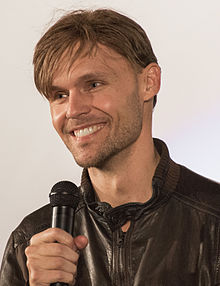

Michelle Williams as Anne Weying: A district attorney and Eddie's ex-fiancée.[18][19] Williams was excited at the prospect of her character becoming She-Venom in the future, and Fleischer felt that it would be fun to give fans an Easter egg of this by briefly showing She-Venom in the film. This was kept a secret until the release of the film, and Flesicher hoped that the positive response to the appearance would lead to more She-Venom in future Venom films or even a standalone She-Venom film.[20]


Riz Ahmed as Carlton Drake / Riot: A genius inventor and leader of the Life Foundation experimenting on the symbiotes.[12][13] Ahmed explained that Drake is trying to save the future of humanity when he discovers the symbiote,[13] with Fleischer adding that Drake has a positive goal but a "moral ambiguity" that leads to him testing his science on other people.[20] Drake is eventually bonded to another symbiote known as Riot, which Fleischer described as "a body-hopper".[13]
Scott Haze as Roland Treece: Drake's head of security.[21]

Reid Scott as Dan Lewis: Anne's new boyfriend, a doctor who tries to help Eddie.[22] Additionally, Jenny Slate and Melora Walters respectively portray Dora Skirth, a Life Foundation scientist,[23] and Maria, a homeless woman that Brock befriends.[24] Chris O’Hara has a brief appearance as astronaut John Jameson.[25] Woody Harrelson is introduced in the film's mid-credits scene as Cletus Kasady,[26] while Stan Lee makes a cameo appearance as a dog-walker who talks to Brock and Venom.[27] Sope Aluko,[21] Scott Deckert,[28] Marcella Bragio, Michelle Lee, Mac Brandt, Christian Convery, Sam Medina,[29] and Ron Cephas Jones also appear in the film.[30]